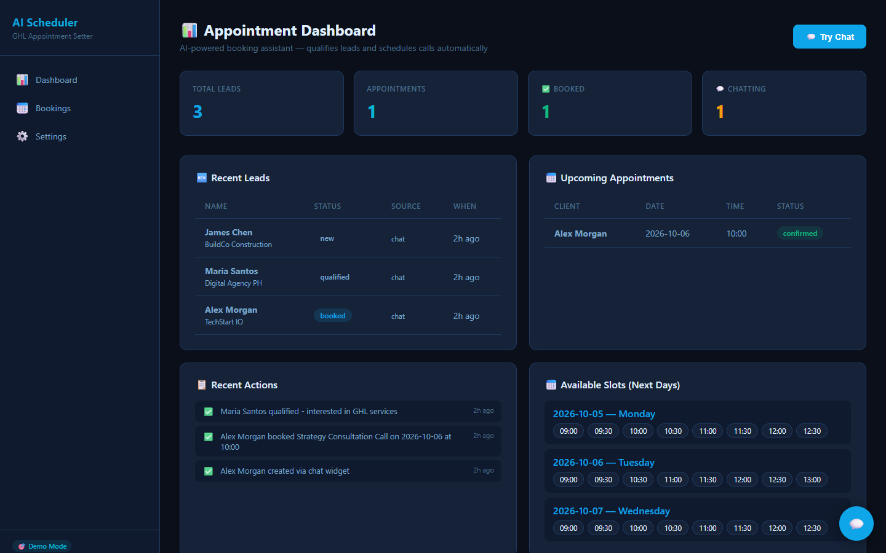
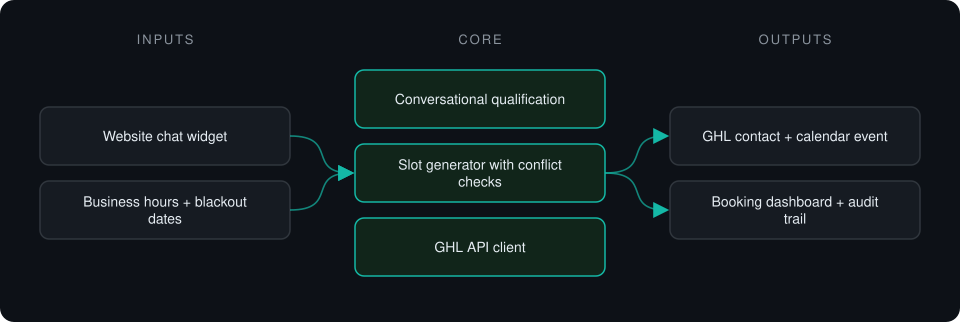
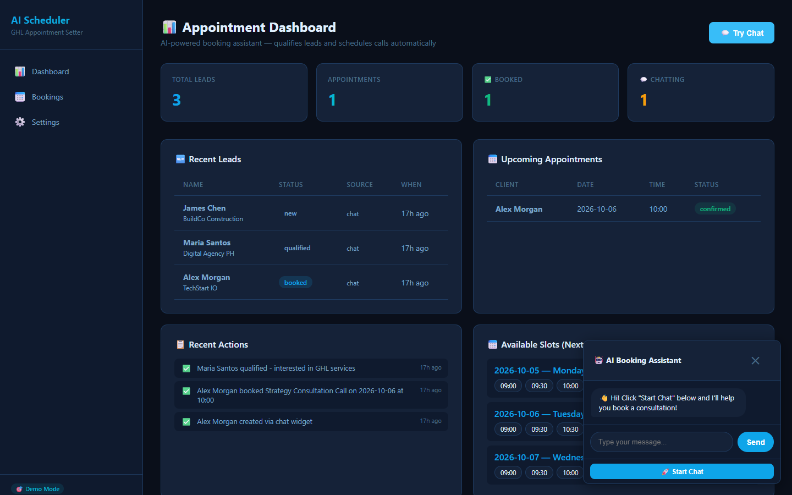

Case study · Private project
GHL Appointment Setter
Chat assistant that qualifies inbound leads, collects contact details and books calls straight into a GoHighLevel calendar.
This is a proprietary project. Source code is private. This page showcases the system's architecture and results.

Problem it solves
Inbound leads go cold while waiting for a human to qualify and schedule them. This assistant handles the first conversation, offers real open slots and creates the contact and event in GoHighLevel.
Architecture

- A visitor opens the chat widget and answers qualification questions.
- Available slots are generated from business hours, minus conflicts and blackout dates.
- The lead picks a slot; the contact and event are created in GoHighLevel.
- Every conversation and booking is logged.
Key features
- Conversational booking flow
- Slot generation with conflict and blackout handling
- GoHighLevel contact and calendar integration
- LLM qualification with a rule-based fallback
- Demo mode with mock GHL responses
Tech stack
- Python
- FastAPI
- SQLAlchemy
- GoHighLevel API
- OpenAI / DeepSeek
- Jinja2
What it does in practice
- Covers the first-contact and scheduling step that would otherwise need a human SDR.
Screenshots
Screenshots show the app running on seeded demo data, not client data.
